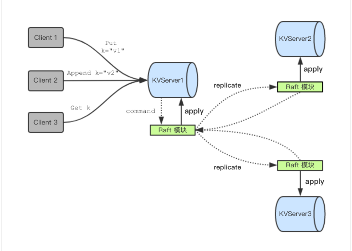
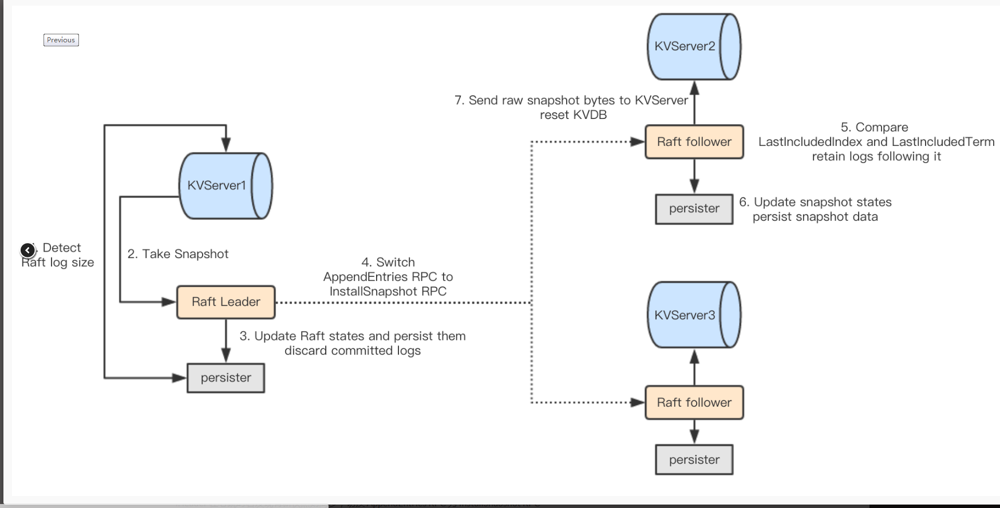
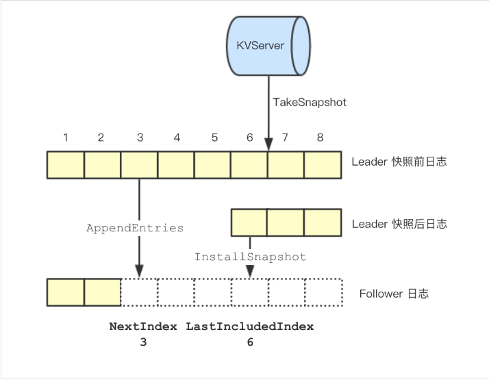

在Lab2，我们完成了底层raft框架的建立，包括Leader选举、日志复制、状态持久化，在网络分区、不可靠网络等各种不稳定条件中保证多机环境下的日志一致性；并确保在节点宕机后，能从磁盘中读取持久化的日志重新执行，快速同步到集群中。Lab3A的任务，是在lab2的raft之上，多加一层收发指令的逻辑，构建kvservice层。kvservice分两部分，一部分是发起指令的client，另一部分是负责处理、同步和执行指令的server，server将收到的client指令作为新日志传递给底层raft，然后由raft同步日志并让对应的kvservice执行指令，实现简易的分布式键值数据库，保证在大多数不良环境下，多机数据库的内容保持一致。此外，随着日志的增加，持久化的数据也在不断扩张，规模较大的持久化数据将会使得日志宕机后恢复的过程较为漫长，拖慢节点回到集群的速度。Lab3B的任务，是实现论文中的快照系统，当日志增长到一定程度时，保存现阶段的数据库快照，并且截断底层raft的日志，当节点宕机后恢复时，首先加载快照，然后执行未执行的指令（一般会非常少），如此一来，节点能快速同步到集群的最新状态。
参考：
Lab3A——容错键值数据库的建立
lab3A要求建立容错键值数据库，编写发起指令的client以及处理指令的server两部分代码，要求系统实现强一致性。所谓的强一致性是指，即便系统本身由多台机器组成，与外界交互时表现的仿佛是一台机器，屏蔽掉所有底层同步的细节，仅仅展露客户所需要的功能。用户不必在意系统如何在多台机器间达成一致，只需要将他们的指令发送给系统即可。实验要求在多个客户以不同次序发送多条指令的情况下，集群中各个server内部的日志都是相同的，并且客户所有的指令都仅仅执行一次，实现幂等性。下面是具体流程图，图片来自这里。

实验分析
在真正开始写代码之前，首先需要分析实验需求，捋清交互逻辑，定义数据结构，设计函数功能，规划总体框架，想明白再去写，可以事半功倍。虽然一开始的想法会在实现过程中不断的微调、修整，但是在写代码前就对内容有一个整体的认识，编码效率会更高。下面分析一下我在写代码前的一些思考，虽然真正写的时候还是出现了很多意料之外的情况，但是总体框架确实是一开始就定好的，每个函数的功能在编写前也是心中有数，后续只是实现上的问题，虽然，这些问题非常折磨。
为了实现幂等性（也就是说每条指令只实现一次），我们需要给客户发送的每条信息编码，问题是，多个用户，如何编码？如何保证多个用户之间的信息编码不会冲突？
答：一开始我的想法是全局统一编码，然而多个机器显然无法做到编码同步，所以这个想法瞬间就舍弃了。
第二个想法是，每个客户单独编号，每条消息都有一对标志（客户编号，信息编号），所以只要比较同一客户的信息编号，就能明白这条信息是否已经执行过。这个设计可行。
接着思考，我用一个map来保存每个客户对应的已执行指令编号，这个map是只有leader维护吗？还是所有server都要维护？考虑同一条指令可能会发送多次，且上一条指令还未指令时可能会发送多次，所以每个server都需要维护这个map，当底层raft交付指令时，以此判断某条指令是否已经执行过。
接下来的问题就是，如何保证每个客户的客户编号不相同？我在这里思考了很久。在多机不通信的环境下，很难百分之百确保生成全局唯一的编号，所以我一开始的想法是，当客户激活时，首先向server端注册自己，server端收到新用户注册时，会返回一个唯一的编号，这样就可以保证客户编号是唯一的。但是也带来了一些问题，如果用户发起注册后，server生成编号并回复的消息丢失，此时用户重新注册，然而server端已经将这个用户放到map里面了，这样一来在map中会沉积大量冗余无用的项，所以这里可以参考三次握手，在客户端注册后，发起第一条信息时，leader才将这条客户放到自己的map中。如果leader宕机怎么办？所以客户注册的消息必须像普通日志一样广播到整个集群，才能注册这个客户。其实感觉挺麻烦的。
最后，考虑到测试中仅仅只会生成几个client，这种情况下，调用client.go里随机生成64位整数的函数生成每个client的编号，是切实可行的。因为这时候出现冲突的概率非常之低，几乎可以忽略不计，而且方便。server如何通知相应的put、append、get操作已经完成？
答：维护一个map，key是该操作对应的编号，value是管道，通过管道传递指令执行成功/失败的消息。具体来说，当对应leader的server收到来自client的RPC调用时，将指令作为参数调用底层raft的start函数，该start函数会返回这条指令对应的编号index和处理这条指令的term。如此一来，当收到一条新消息时，以index为key值在map中插入新的管道，然后监听这个管道。server等待底层raft同步这条指令，当底层raft同步成功交付这条指令时，在管道中传递执行指令的term，RPC调用根据管道的输出来判断这次执行是否成功。注意执行指令的term，和申请指令时的term不一定相同。比如通过start申请指令时的term是1，index是3，而server收到执行index=3指令的term是5，此时无法保证index=3的指令就是在RPC中等待的指令。
随之而来的还有一个问题，这个key=index,value=chan的map该由谁保管？毫无疑问，只有leader会执行信息，所以理论上来说，只有leader会保持这个map。但是，由于leader会宕机，所以会存在两个情况:第一，旧leader接收信息后变成follower；第二，新leader上位，但是之前RPC调用的管道在旧leader那里，新leader还没开始维护这个map。
其实很好解决，首先在server的put、get函数中，用select给管道等待加一个超时操作，如果超时，返回失败；其次，管道中传递的是term，可以通过比对start时的term和管道中的term来判断本server是否已经变成follower，这里我的逻辑是如果遇到这样的情况，返回失败，因为无法确保index的指令是start时的指令，但是可以根据map[客户编号， 已执行消息编号]来判断这条命令是否已经执行；每个server执行一条指令后，会首先判断自己是否存在map[index, chan]，如果存在，往chan中塞入信息，如果不存在，就不塞信息，防止往空管道中塞入信息造成错误。此外，每个put、get函数返回前，会手动删除对应index的管道，避免管道累积占内存，虽然也占不了多少。
client
client模拟发起操作的客户，将所需要执行的指令通过RPC调用发送给server，并等待指令执行的结果。
client的三种操作：
- put：(key, value)，在数据库中新建键值对，如果该键已存在键值对，则用新的键值对覆盖数据库中已经存在的旧键值对。
- append：(key, value)，将value“添加”到数据库中key值所对应的value中。在lab3，value都是string型，所谓的添加就是字符串拼接。
- get：(key， ),获取数据库中key值所对应的value返回给client。
client逻辑：
client发起指令的逻辑非常简单，一个无限循环直到该指令发送成功为止。在循环内部是一次RPC调用，如果成功，直接返回；如果由于超时或者所联系的server对应raft不是Leader，则更换一个server继续发起指令。为了加快操作，当client联系到leader时，会记录leader的编号，下一次执行新命令时，直接联系leader，而不是从头开始遍历寻找leader。下面以get为例展示逻辑，put是一样的：
1 | func (ck *Clerk) Get(key string) string { |
server
在分布式数据库中，存在有很多个server，每个server对应一个raft，上层server负责执行指令，下层raft负责同步指令，而对应Leader的server负责接收指令以及响应client的操作。
op数据结构
为防止重复执行指令，以及监听哪一条指令执行成功，每一条经由server传递给raft的指令都需要以下几点信息：
- 操作：本条指令执行什么操作get、append或者put。
- key：指令对应的键值。
- value：指令对应的value值，对于get操作，这一条可以为空。
- clerk：这是哪一个客户。
- index：这是clerk的第几条命令。
具体定义如下：1
2
3
4
5
6
7
8
9
10
11
12
13
14
15
16
17
18
19
20
21
22
23
24
25
26
27
28
29
30
31type Op struct {
// Your definitions here.
// Field names must start with capital letters,
// otherwise RPC will break.
Method string //Put or Append or Get
Key string
Value string
Clerk int64 //哪个clerk发出的
Index int // 这个clerk的第几条命令
}
```
### kv新增数据结构
为了监听指令是否完成，我们需要一个key=index，value=chan的map。此外，还需要一个key=client，value=index的记录每个客户执行了什么指令的map。此外，还需要键值数据库。对应定义如下：
```go
type KVServer struct {
mu sync.Mutex
me int
rf *raft.Raft
applyCh chan raft.ApplyMsg
maxraftstate int // snapshot if log grows this big
// Your definitions here.
clerkLog map[int64]int //记录每一个clerk已执行的命令编号
kvDB map[string]string //保存key value
msgCh map[int]chan int //消息通知的管道
persister *raft.Persister
}
处理RPC调用逻辑：
server端处理get、append操作的逻辑如下：
- 将RPC附带的参数如客户编号、客户指令编号、操作等填入op中，作为一条新指令。
- 将这条新指令传递给与server相关联的rf start函数。
- 根据start函数的返回结果，判断本server对应的raft是否是leader，若不是，返回失败参数。
- 若本server对应的rf是leader，创建相应index的管道，并设置超时时间，等待管道有信息或者时间超时。
- 如果时间超时，返回失败参数。
- 如果管道有输出，则将管道输出（执行命令的term）与申请命令时的term作比较，若相等返回成功参数，若不相等，返回失败参数。
get操作如下：
1 | func (kv *KVServer) Get(args *GetArgs, reply *GetReply) { |
append操作：1
2
3
4
5
6
7
8
9
10
11
12
13
14
15
16
17
18
19
20
21
22
23
24
25
26
27
28
29
30
31
32
33
34
35
36
37
38
39
40
41
42
43
44
45
46
47
48
49func (kv *KVServer) PutAppend(args *PutAppendArgs, reply *PutAppendReply) {
// Your code here.
op := Op{args.Op, args.Key, args.Value, args.ClerkID, args.CmdIndex}
//raft.InfoKV.Printf("KVServer:%2d | receive RPC! Clerk:[%20v] index:[%4d]\n", kv.me, op.Clerk, op.Index)
reply.Err = OK
kv.mu.Lock()
//follower收到已经执行的put append请求，直接返回
if ind, ok := kv.clerkLog[args.ClerkID]; ok && ind >= args.CmdIndex{
//该指令已经执行
kv.mu.Unlock()
//raft.InfoKV.Printf("KVServer:%2d | Cmd has been finished: Method:[%s] clerk:[%v] index:[%4d]\n", kv.me, op.Method, op.Clerk, op.Index)
reply.WrongLeader = false
return
}
kv.mu.Unlock()
//raft.InfoKV.Printf("KVServer:%2d | Begin Method:[%s] clerk:[%20v] index:[%4d]\n", kv.me, op.Method, op.Clerk, op.Index)
index, term, isLeader := kv.rf.Start(op)
if !isLeader{
//raft.InfoKV.Printf("KVServer:%2d | Sry, I am not leader\n", kv.me)
reply.WrongLeader = true
return
}
kv.mu.Lock()
raft.InfoKV.Printf(("KVServer:%2d | leader msgIndex:%4d\n"), kv.me, index)
ch := make(chan int)
kv.msgCh[index] = ch
kv.mu.Unlock()
reply.WrongLeader = true
select{
case <- time.After(WaitPeriod):
//超时还没有提交，多半是废了
raft.InfoKV.Printf("KVServer:%2d | Put {index:%4d term:%4d} Failed, timeout!\n", kv.me, index, term)
case msgTerm := <- ch:
if msgTerm == term {
//命令执行，或者已经执行过了
raft.InfoKV.Printf("KVServer:%2d | Put {index:%4d term:%4d} OK!\n", kv.me, index, term)
reply.WrongLeader = false
}else{
raft.InfoKV.Printf("KVServer:%2d | Put {index:%4d term:%4d} Failed, not leader!\n", kv.me, index, term)
}
}
go func() {kv.closeCh(index)}()
return
}
可以注意到，在正式put操作之前有一个判断这个命令是否已经执行的操作，而get操作却没有。因为对于append操作而言，即便是follower收到这个rpc调用，但是一旦follower也执行了这个操作，那么leader也执行了这个操作，且这个操作不需要访问kvDB里的值，因此可以直接返回。而get必须要通过leader来处理，因为get需要获取数据库中的某个值返回，如果是follower执行get操作，那么将很有可能返回一个旧值。
管道回收逻辑
为了防止管道太多占用内存，所以每个get和put操作完成后，都会关闭管道，并且从map中删除key=index这一项。1
2
3
4
5
6func (kv *KVServer) closeCh(index int){
kv.mu.Lock()
defer kv.mu.Unlock()
close(kv.msgCh[index])
delete(kv.msgCh, index)
}
主要逻辑
接下来则是server的重中之重，当server通过传递给rf的applyCh中收到rf已经同步成功的指令时，开始执行这一条指令：
- 判断这条指令是否已经执行。
- 若未执行，判断是什么指令，执行之。
- 若是leader，给相应管道传递消息；若是follower，由于map中没有这一项，所以忽略。
1 | func (kv *KVServer) receiveNewMsg(){ |
server初始化
1 | func StartKVServer(servers []*labrpc.ClientEnd, me int, persister *raft.Persister, maxraftstate int) *KVServer { |
说明
代码中出现的InfoKV是我自己定义的日志，忽略之，反正是某种输出日志的东西，自定义即可。
坑
在实现时遇到了许多坑，给大家分享一下。
kv通过apply接收底层raft的信息引发的死锁：死锁不是仅仅是两个锁，还可能是管道和锁之间，或者管道和管道之间引起的！
说明：在put函数里，先判断命令是否执行，而这个判断由于要访问clerkLogs，因此需要加锁。一开始我对底层raft的start函数调用也是包含在kv的锁里，因此引发了死锁。比如，当底层apply一次性提交很多个数据时，会一直占用rf.mu，server接收数据的逻辑时，接收一个数据=>申请kv.mu=>处理数据=>释放锁=>接收第二个数据，假设底层raft有10个数据要提交，当提交完第二个数据后，有新的get操作到来，获取了kv的mu的锁，由于start需要rf.mu，因此卡住，而server接收数据这边，由于一直未能获取kv.mu锁，因此也卡住，而底层raft由于不能通过管道提交数据，也卡住，因此不会释放rf.mu锁，因此引发了死锁。
第二个坑是个很有趣的问题，分享一下：
一开始我接受数据的逻辑是这么写的：
1
2
3
4
5
6
7
8
9For{
select
{
case <- exitch:
return
Case<-applych
//do something
}
}
  不用在意exitCh，本来是想像结束raft一样，当调用kv.Kill()函数时，通过这个管道结束这个goroutine。不过仔细一想，当底层raft“死”掉时，不再有数据交付，其实上层kv就和“死”掉差不多。另外其实可以在底层rf被kill掉时，往上层提交一个代表结束的指令，上层kv接收到这个指令就结束自己也是可以的。不过这不重要。
  重要的的是，当我这么写的时候会出现这么一种情况：当命令交付并且执行完后，管道还没创建！
  这种情况的出现是因为，在put函数start后，需要调用kv.mu来创建管道，但是有一种可能，底层raft一直在交付数据，直到新指令同步了仍然在交付数据，并且server接收指令的逻辑一直在运行，不断地获得kv.mu，使得put函数无法创建管道。因此当这条命令执行完交付时，命令对应的管道都还没有执行。其实在现在这个版本中，这不是问题，因为put会超时，返回失败参数，然后重新发送指令，然后第二次发送指令时会发现已经执行了。只是很偶尔，还是会出现管道还没创建的情况。
小结
lab3A的挑战就是处理各种死锁问题，会遇到各种奇葩的死锁，以及在各种边界条件疯狂试探，必须考虑到所有可能发生的边界条件并加以预防，不要抱侥幸心理，觉得这不可能发生！多线程调度会带来各种问题，比如管道还没来得及创建，另一个线程就使用，完全是有可能的。
另外，我没有通过race，因为我在各种地方疯狂打log，而我打log又需要用到kv.me等敏感变量，但其实去掉这些log之后就能通过race了。
效果
1 | Test: one client (3A) ... |
Lab3B——状态快照与日志压缩
随着系统不断运行，底层raft保存的日志越来越多，这会带来三个问题：
- 每一次持久化数据的时间会越来越长，拖慢日志同步的时间，因为持久化数据时需要用到rf.mu锁。
- 当底层raft宕机后，通过持久化数据恢复的时间会非常漫长。
- 脱离集群很久的节点重新回到集群时，需要同步的日志会非常的多。
因此，有必要定时对上层server的状态保存快照，压缩底层raft的日志，这样一来，不论是持久化数据的时间、恢复的时间，已经脱离集群很久节点的同步时间都会大大缩短，提高系统的性能。其逻辑流程图如下，图片来自这里

思考
同样的，在写代码前，需要思考一下如何实现快照功能，以及设计相应的函数和数据结构。
首先，一个很重要的问题是，快照会截断raft的日志，进行此操作之后，日志编号不等于在raft中logs保存的编号，那么如何来获取日志编号和logs编号的对应关系？
答：在这里，根据论文描述，新设立两个变量rf.lastIncludedIndex和rf.lastIncludedTerm，分别对应上一个快照最后一条指令的编号和任期。如此一来，日志编号=logs下标+rf.lastIncludedIndex，换句话说，日志就保存在rf.logs[日志编号-rf.lastIncludedIndex]中。
应该快照哪些内容？
答：快照的功能是保存当前键值数据库的状态以方便未来恢复，所以对于server而言，必须要快照的是此时的键值数据库kvDB，其次，为了记录有什么指令已经执行过，map[客户编号，指令编号]同样需要快照保存。对于raft来说，在上层server快照的同时，会丢弃快照对应的指令，保存快照之后未执行的指令。所以在快照时，raft需要同步持久化数据，包括未执行的日志logs，指示快照对应的日志编号rf.lastIncludeIndex和lastIncludedTerm，同时还要保存raft当前的任期以及votedFor。有了这些参数，在上层server恢复快照时，底层raft能同步恢复到相应的状态。
快照的逻辑？
答：kv在建立时会获得maxRaftState参数来控制底层raft日志的长度，快照具体逻辑如下：
对于每一个server：- 上层server在执行完一条指令，检测底层raft的持久化数据的长度。
- 如果持久化数据过长，上层server会保存当前clerkLogs和kvDB的快照，并将快照传递给底层rf。
- 底层rf收到上层server的快照，首先判断此快照操作是否最新。
- 如果是，调用自身的persister同时保存快照和当前的状态。
对于leader：
- Leader发现follower日志缺失或者日志不匹配，并且所需要的日志已经被快照时，切换AppendEntries为InstallSnapshot。
- follower接收到来自leader的快照操作时，与自身快照对比，决定是否进行日志覆盖或者删除。
- 如果决定接收leader快照，follower将同时持久化此快照数据和自身状态。
- follower发送快照信息给上层servre，重置上层server的键值数据库以达成一致。
执行快照的影响？
答：上层server收到来自底层raft的快照数据后，重置自身键值数据库和[客户编号，指令编号]字典。
这里persis是覆盖式保存，也即是后面保存的快照和日志会覆盖之前保存的快照和日志，如果follower要求的日志在leader所保存的快照和日志之前，该怎么办？
答：凡是follower所需要的日志已经被leader快照，leader直接发送自身快照过去，而不再是发送日志。这可以大大加快日志同步速度。如下图所示：图片来自这里
可以看到，当follower日志缺失较多时，直接发送快照能加快离群节点的同步速度。只是这里有些取舍问题，发送快照真的比同步日志更快吗？一个快照包含整个键值数据库，而日志仅仅包含一些指令，如果键值数据库较大，发送快照不一定比同步日志更快吧。然而，当快照后leader就丢弃之前的日志，也无法同步日志了。所以，我觉得，实际应用中maxRaftState应该设置的大一点，快照不能太频繁，否则频繁发送快照对带宽占用率太大了；另一方面，快照也要定时进行，防止宕机后恢复的时间太长。

旧日志必须要以go可以回收的方式丢弃。也就是说，丢弃日志后，必须重新make新的切片来保存未执行的日志。
raft 持久化数据时新增两个变量，就是rf.LastIncludedIndex和rf.lastIncludeTerm，这两个变量仅仅在快照时会更改。当raft从持久化数据中恢复时，不仅要恢复这两个变量，还需要将rf.lastApplied和rf.commitIndex设置为rf.lastIncludedIndex。这一点一定要注意，因为引入快照后，最后执行的指令是rf.lastApplied。
关于下标或者编号的问题。在引入快照操作后，日志就对应两个编号，一个是真实编号，代表这条指令是整个集群执行的第几条指令，完全递增；第二个是下标编号，代表这条指令保存在rf.logs的第几位，我们必须明确，什么时候使用真实编号，又在什么情况下，使用下标编号。
答：毫无疑问，涉及到比较的，都是用真实编号，如rf.lastApplied, rf.commitIndex, prevLogIndex, nextIndex, matchIndex，这些都保存为真实编号，指示真正执行的指令编号。而当要访问指令时，则使用下标编号(rf.logs[真实编号-rf.lastIncludedIndex])，所以其实很明确了，在所有情况下，所有编号都使用真实编号来存储、比较、判别，只有当引用某条具体指令时，才利用其下标编号访问rf.logs。别看现在说的好像很简单，没有什么技巧的样子，当时我就在这里卡了很久，修改了很多地方才改对。
server
server在启动时首先加载快照数据，然后循环进行日志长度检测、快照数据保存、给rf发送快照信号以及接收来自rf的快照。
加载快照数据
在建立新的kv时，首先判断其peresist里有没有快照数据，如果有，则立刻恢复快照。1
2
3
4
5
6
7
8
9
10
11
12
13
14func StartKVServer(servers []*labrpc.ClientEnd, me int, persister *raft.Persister, maxraftstate int) *KVServer {
//其他变量的初始化
...
kv.persister = persister
kv.loadSnapshot()
raft.InfoKV.Printf("KVServer:%2d | Create New KV server!\n", kv.me)
go kv.receiveNewMsg()
return kv
}
1 | func (kv *KVServer) loadSnapshot(){ |
1 | func (kv *KVServer) decodedSnapshot(data []byte){ |
恢复快照数据
当底层rf交付的消息的commandValid为false时，表明kv需要从交付的数据中读取快照并重置键值数据库。如果觉得commandValid变量名不太贴切的，可以自己修改一下。1
2
3
4
5
6
7
8
9
10
11
12
13
14
15
16
17
18
19
20func (kv *KVServer) receiveNewMsg(){
for msg := range kv.applyCh {
kv.mu.Lock()
//按序执行指令
index := msg.CommandIndex
term := msg.CommitTerm
//role := msg.Role
if !msg.CommandValid{
//snapshot
op := msg.Command.([]byte)
kv.decodedSnapshot(op)
kv.mu.Unlock()
continue
}
//正常执行指令
...
}
}
检测日志长度
在执行完一条指令后，检测此时快照数据是否超过maxRaftState。要注意，这里需要在执行完一条指令后检查状态，而不是在执行指令之前。因为我的代码逻辑中，快照所对应的最后一条指令，就是执行检测时的指令编号index，也就是说，快照等于index及之前的所有指令执行的结果。1
2
3
4
5
6
7
8
9
10
11
12
13
14
15func (kv *KVServer) receiveNewMsg(){
for msg := range kv.applyCh {
kv.mu.Lock()
...
//按序执行指令
//要放在指令执行之后才检查状态
//因为index是所保存快照最后一条执行的指令
//如果放在index指令执行前检测，那么保存的快照将不包含index这条指令
kv.checkState(index, term)
kv.mu.Unlock()
}
}
快照数据保存
1 | func (kv *KVServer) checkState(index int, term int){ |
1 | func (kv *KVServer) encodeSnapshot() []byte { |
注释里是一个很有意思的坑，由于快照需要底层rf.mu锁，而很可能现在rf在连续apply数据一直持有rf.mu锁，因此使用goroutine来调用底层rf保存快照的方法。然而这里编码的函数encodeSnapshot并没有申请kv.mu，因为一开始我默认调用此函数时拥有kv.mu。所以就出现问题了。goroutine的执行顺序是不确定的，所以可能在执行第二条指令，在修改kvDB时，才并发执行这个goroutine，而这个goroutine需要编码数据，需要访问kvDB,因为造成并发同时读和写同一个map，引发错误，猝不及防。修改方法很简单，先生成快照数据再调用底层rf的方法即可。
raft
底层raft负责接收来自上层server的快照通知，leader负责同步快照给落后节点，follower在接收到来自leader的快照时，将快照传递给上层server重置数据库。
raft收到server快照通知
raft收到来自server的快照通知时，会做如下操作：
- 判断此快照是否是最新。
- 如果是，截断日志，并将未执行日志放到新建的切片中。
- 保存快照以及持久化相关变量。
1 | func (rf *Raft) TakeSnapshot(rawSnapshot []byte, appliedId int, term int){ |
1 | func (rf *Raft) persistStateAndSnapshot(snapshot []byte){ |
为什么需要判断快照是否是最新呢？这是因为一条日志的大小可能是几十字节，并且通常一次性会交付几十条指令（占几百字节），而由于交付数据一直占用rf.mu导致无法快照，所以快照需要提前进行。这就造成一种情况，假如底层raft连续交付100条指令，可能后面50条指令都会引发快照，由于goroutine执行顺序的不确定性，新快照可能会在旧快照之前执行，所以需要忽略旧的快照指令。
leader发送快照
当leader发现某个follower对应的nextIndex小于等于rf.lastIncludedIndex时，表明这个follower所需要的日志已经被leader丢弃，此时leader发送快照。在我的实现中，统一在发送心跳前判断是否需要快照，并且仅仅在这里发送快照，日志缺失或者不匹配时，并不会立即发送快照，而是修改相应的nextIndex变量。1
2
3
4
5
6
7
8
9
10
11
12
13
14
15
16
17
18
19
20
21go func(server int) {
for {
rf.mu.Lock()
if !rf.checkState(Leader, curTerm) {
//已经不是leader了
rf.mu.Unlock()
return
}
//脱离集群很久的follower回来，nextIndex已经被快照了
//先判断nextIndex是否大于rf.lastIncludedIndex
next := rf.nextIndex[server]
if next <= rf.lastIncludedIndex{
//注意，此时持有rf.mu锁
rf.sendSnapshot(server)
return
}
//正常发送心跳or同步日志
}
}
1 | func (rf *Raft) sendSnapshot(server int) { |
InstallSnapshot逻辑
follower接收到来自leader的快照后，进行如下操作：
- 判断leader的快照是否比自己的新
- 如果接受快照的是leader，转为follwer
- 截断日志并且保留未执行日志
- 修改rf.lastIncludedIndex、rf.lastIncludedTerm、rf.lastApplied、rf.lastCommitIndex
- 持久化新快照和rf各变量状态
- 给上层server发送快照信息
1 | type InstallSnapshotArgs struct { |
修改日志同步的代码
引入rf.lastIncludedIndex后，将会修改获取日志的方式，因此，需要修改leader发送心跳信息和follower接收到心跳信息的逻辑，这一部分因个人实现不同，我就不贴代码了，有兴趣的可以点这里
结果
不知道为什么，我的时间比官方要求多得多。。其他实验都好好的，真是奇怪。而且官方截图，2000多条指令花了0.4s，我这里3909条指令花了80s，也不知道是为什么。
另外，最后一个测试偶尔会出现死锁，测试了大概30次出现一次，但是重现环境有点麻烦，就没管了。
还有一点，最后一个测试偶尔会报“日志没有修剪”的错误，和上面提到的原因一样，底层raft一次性提交了过多的日志，使得kvservice来不及快照，程序就结束了。这个我也没什么好办法解决，就酱吧。1
2
3
4
5
6
7
8
9
10
11
12
13
14
15
16
17
18 Test: InstallSnapshot RPC (3B) ...
... Passed -- 8.9 3 1948 63
Test: snapshot size is reasonable (3B) ...
... Passed -- 80.9 3 3909 800
Test: restarts, snapshots, one client (3B) ...
... Passed -- 19.6 5 6760 150
Test: restarts, snapshots, many clients (3B) ...
... Passed -- 25.4 5 13237 3000
Test: unreliable net, snapshots, many clients (3B) ...
... Passed -- 17.2 5 2030 517
Test: unreliable net, restarts, snapshots, many clients (3B) ...
... Passed -- 22.0 5 3082 529
Test: unreliable net, restarts, partitions, snapshots, many clients (3B) ...
... Passed -- 27.8 5 2876 253
Test: unreliable net, restarts, partitions, snapshots, many clients, linearizability checks (3B) ...
... Passed -- 26.2 7 7023 622
PASS
ok kvraft 227.821s
小结
lab3B的挑战在于，引入日志压缩后日志下标的计算，什么时候该用日志编号（永远递增不会减小），什么时候该用在本机中存储的日志下标(日志编号-rf.lastIncludedIndex)，需要好好思考。
此外，接收快照时需要修改的变量太多了，容易遗漏，特别是lastApplied和commitIndex。当涉及到变量修改时，最好看着rf拥有的字段来写，思考这一步操作对这一个字段会产生什么影响，这样就可以尽量避免遗漏。
在实现中，上层server每执行一条指令，就判断是否需要发起快照。然而如果某个leader脱离集群，然后疯狂接收指令，日志疯狂增加，但是由于脱离集群无法同步指令，也就无法交付指令，因此上层server不会促发快照，导致日志会无限增长。关于这一点，我们需要思考一下，快照的目的是什么？快照的目的是节点宕机后快速恢复数据以及减少日志同步的时间，简而言之，快照保存的都是已经同步到超半数节点并且已经执行的指令！然而对于这一种情况，由于不能交付信息，所以上层servr的数据库并没有更改，所以如果根据rf接收日志长度而不是rf交付日志长度来快照的话，后面的快照和之前的快照是一样的，但有一个好处是可以减少日志占用的内存。问题是快照的同时会修改rf.lastIncludedIndex，这样一来，当这个旧leader回到集群时，新leader如果没有旧leader这么多日志，就不能发送快照给旧leader了，当然，只要修改一下判别条件，快照与否不仅仅是判断lastIncludedIndex,同时也判断lastIncludedTerm即可。不过有点麻烦，就没写了。
总结
在lab3中，遇到了许多锁的问题，在多线程环境下，有些锁的出现猝不及防，一个良好的日志系统（不是同步的日志，而是打印输出的日志）能帮助我们快速定位到出错的地方。然而日志并不是越多越好，应该在哪些地方输出日志、日志应该输出什么内容、日志包含哪些标记有助于后续筛选，这都需要设计者去权衡。日志输出的多了，不好找引起错误的日志；日志输出少了，不好定位错误的位置，很难复盘诱发错误的场景。将日志分级，比如info、warn、error，可以区分问题的程度，后续只需要关注级别更严重的日志；此外，不同层输出不同的日志有助于日志解耦，比如raft一个单独的日志，kv一个单独的日志，这样查起错来更加简便，能快速定位问题所在。
一些简单但是后续会修改的操作应该集成写成函数调用。比如lab3B中的日志压缩，压缩后会修改日志下标的计算方式，如果lab2中用普通的方式（logs[i]这种）来获取日志下标，等到lab3B将会改的非常之痛苦，而且你也不能确保没有遗漏。最好的方法，就是将获取日志的方式，包括获取nextIndex，获取prevLogIndex,获取当前日志的对应下标i=index-rf.lastIncludedIndex,写成函数，这样只需要修改函数就能修改所有获取日志的方式，简洁方便，扩展性强。同理还有各种常数参数的设定，比如RPC等待超时时间等等，在文件开始用const设置，一改都改，舒服。
和lab2不同，lab3更多的是需要自己去设计框架，设计交互的方式和时机，设计命令执行的逻辑流程。因为lab2中的主要内容，包括leader选举、角色变换、日志复制等都在论文中有详细的讨论，我们只需要将文字翻译成代码就可以了。而lab3，更多的是需要自己去设计对应的函数，去思考client发送指令的逻辑是怎样的，server又是如何处理从client发来的指令，又应该何时修改键值数据库，lab3A特别容易引起死锁，在这里调试了很久。至于lab3B，快照的时机、快照的内容、快照对底层raft日志的影响都是需要仔细斟酌思考的要点。特别是快照引起日志截断后，raft管理日志的处理方式是重中之重，因为这会涉及到leader选举、日志同步等问题，较为复杂，在这里修改了很久。
除此之外，将较为复杂的函数只放到一个地方执行也是一个非常好的编程习惯，比如Leader发送快照(InstallSnapshot)的时机。由于发送快照牵一发而动全身，会改变太多东西，所以尽可能的在一个地方发送快照。当遇到需要发送快照的场景，比如follower需要的日志已经被leader丢弃时，并不是直接发送快照，而是设置相应的条件，统一在一个位置经过判断发送快照（在实现中，在发送正常心跳之前，通过判断nextIndex来确定是否发送快照）。这样的好处在于代码维护性更高，可读性更强，而且易于调试，便于管理。这样一来，当可能是快照出问题时，很容易找到错误的地方，重现诱发错误的条件，修改相应的bug。而如若是多个地方都有可能发送快照，特别是在多线程环境下，找起bug来简直痛苦。
Lab2和Lab3合在一起就是一个简易的分布式键值数据库，这是一个很好的例子，向我们展示了优秀设计的重要性。在本实验中，将指令执行(lab3)和日志同步(lab2)解耦，在编写代码时，更容易聚焦于当前阶段所关注的问题，而不用去思考上下层对自己的影响。这样的实现方式更模块化，方便功能扩展。